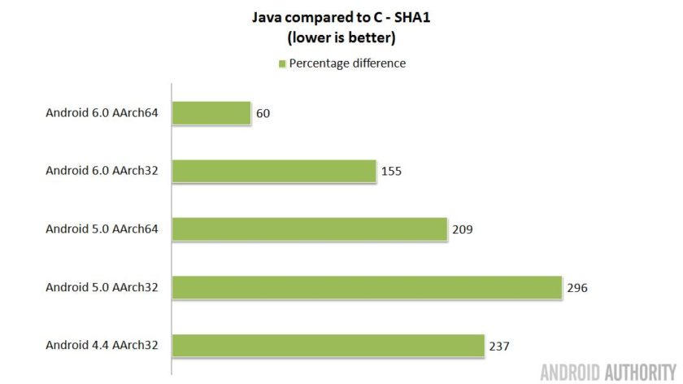
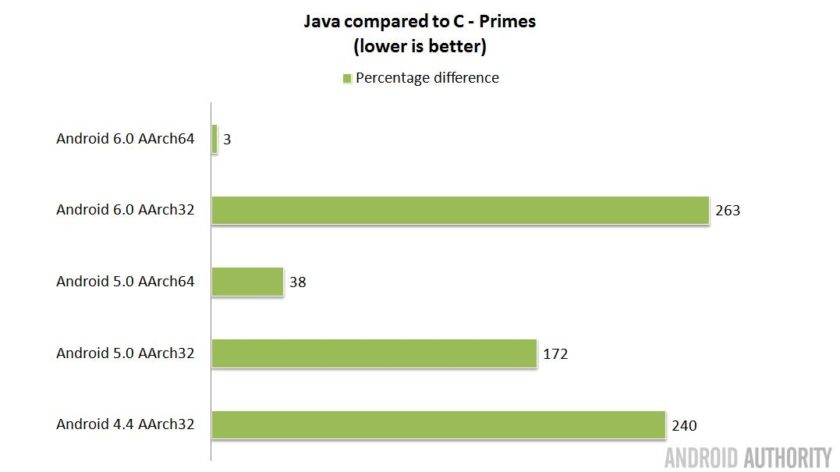
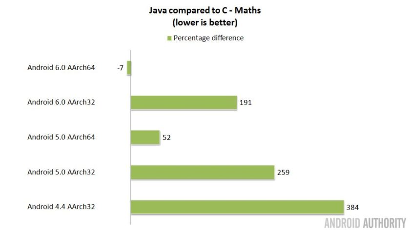

Why using C with Android?
Android uses a Virtual Java Machine (Dalvik) and all APIs like GUI-elements or camera are provided through Java. Android states itself, that using the NDK for native C support is not worth the additional complexity in most cases, beside the following two exceptions.1
1. Speed Up with C
Here is a little article about Java vs. C performance on Android. Three different heavy calculating tasks without GUI are done. First a SHA1 hash is calculated 50,000 times. Second the first million primes are calculated using a trial division and third a self written large mathematical function with many multiplication and divisions.|  |  |  |
{kind=link}
{kind=link}
{kind=link}
The reasons for Java being slower are stated as following:
- Java is run in a virtual machine. You can not run a virtual machine for free.
- Java Apps are compiled to the virtual machine and therefore have to be translated during runtime to native machine code, which is not for free either.
- Java uses automated memory management, which is done through the garbage collector. And guess what - a run of the garbage collector is of course also not for free.
The surprising event, that one device was faster with Java than with C with the mathematical function is probably only due to the fact, that the Java compiler was lucky to find a really good optimization. Beside, no objects were created in the function, so the garbage collector was for free this time.
But you can see, that the gap between Java and C becomes smaller with new Android versions. Android is making its Dalvik faster and since Android 5.0 Dalvik has the ability to compile frequently used bytecode of the virtual machine into native machine code dynamically, which is known as just-in-time compilation. So the third disadvantage disappears. Nevertheless native C programs will always be faster than Java programs in general.
2. Source Code reusability
I have written my Bachelor-thesis about good source code. DRY is one of the most important principle of programming for good source code for many reasons:- Doing things again and again is expensive.
- Each time you do something, you can make a mistake.
- When you have done one thing many times and you want to change it, you have to change it many times. As you can see in the first two points, this is expansive and error prone.
- ...
So, when you already have a program, you don't want to rewrite it from scratch in a new programming language! In our case, the numeric core of Metos3d, which does by the way heavy calculations, has almost 3,000 lines of code and PETSc has to be crossed compiled anyway. Otherwise even a new Java toolkit for solving non-linear equations has to be found for android implementation. So it would definitely be nice to cross-compile the current version, special in mind of future changes and development.